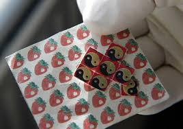

lsd
Τι είναι;
Το LSD είναι ημι-συνθετική ουσία που προέρχεται από το λυσεργικό οξύ, το οποίο βρίσκεται σε μύκητες που μεγαλώνουν στη σίκαλη ή άλλα σιτηρά.
Το LSD, που συχνά αναφέρεται ως “acid”, πωλείται συνήθως στην πιάτσα σε τετράγωνα κομμάτια στυπόχαρτου εμποτισμένα με σταγόνες της ουσίας. Μπορεί επίσης να πωληθεί ως δισκία, κάψουλες και ενίοτε σε υγρή μορφή. Είναι άχρωμη, άοσμη ουσία με ελαφρά πικρή γεύση.
Πώς καταναλώνεται;
Συνήθως καταπίνεται.
Πώς επιδρά στους χρήστες;
H χρήση LSD προκαλεί έντονες μεταβολές στη σκέψη, τη διάθεση και τις αισθήσεις, καθώς και ενσυναίσθηση και κοινωνικότητα. Ωστόσο, οι ακριβείς επιδράσεις της ουσίας εξαρτώνται κάθε φορά από την ψυχική κατάσταση του χρήστη και το περιβάλλον όπου γίνεται η χρήση.
Ποιοι είναι οι κίνδυνοι που συνδέονται με τη χρήση LSD;
Βραχυπρόθεσμα, το LSD προκαλεί παραισθήσεις και διαστρέβλωση της αντίληψης. Η αίσθηση του βάθους και του χρόνου αλλάζει. Τα χρώματα, οι ήχοι και η αφή είναι πιο έντονα.Μερικοί χρήστες LSD βιώνουν έντονες, τρομακτικές σκέψεις και συναισθήματα, όπως ο φόβος ότι χάνουν τον έλεγχο, ότι τρελαίνονται, ότι θα πεθάνουν, καθώς και απόγνωση.Οι σωματικές επιδράσεις είναι περιορισμένες σε σύγκριση με τις ψυχολογικές και τις συναισθηματικές. Στις σωματικές επιδράσεις περιλαμβάνονται διεσταλμένες κόρες, αυξημένος καρδιακός ρυθμός και αρτηριακή πίεση, απώλεια της όρεξης, υπνηλία, ξηροστομία και τρόμος.
Το LSD είναι μια από τις πιο ισχυρές παραισθησιογόνες ή ψυχεδελικές ουσίες. Αυτές είναι ουσίες που μεταβάλλουν την κατάσταση του συνειδητού του χρήστη και προκαλούν διαφορετικά είδη παραισθήσεων. Αλλά είδη παραισθησιογόνων είναι η φαινκυκλιδίνη (PCP), οι παραισθησιογόνες αμφεταμίνες, η μεσκαλίνη και τα παραισθησιογόνα μανιτάρια (ψυλοκυβίνη).